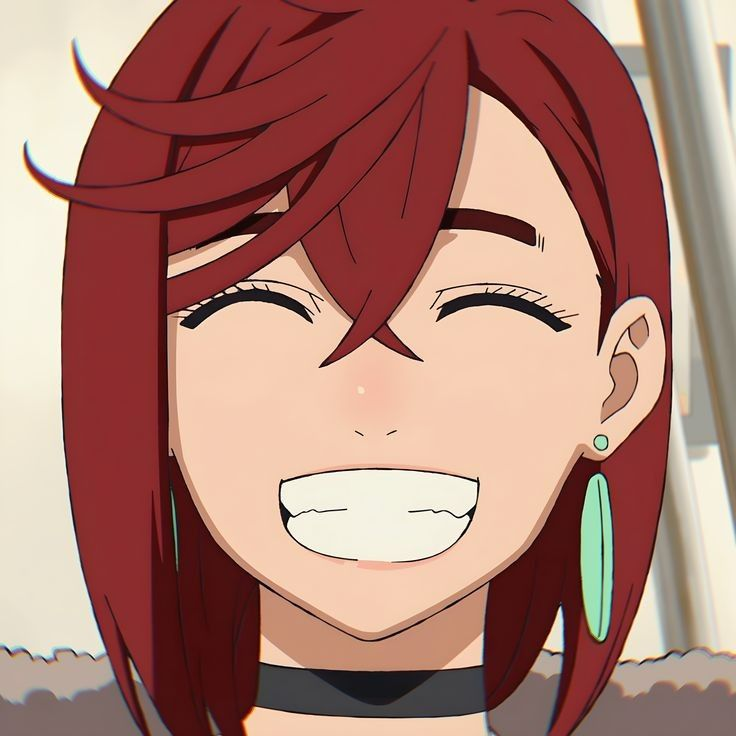
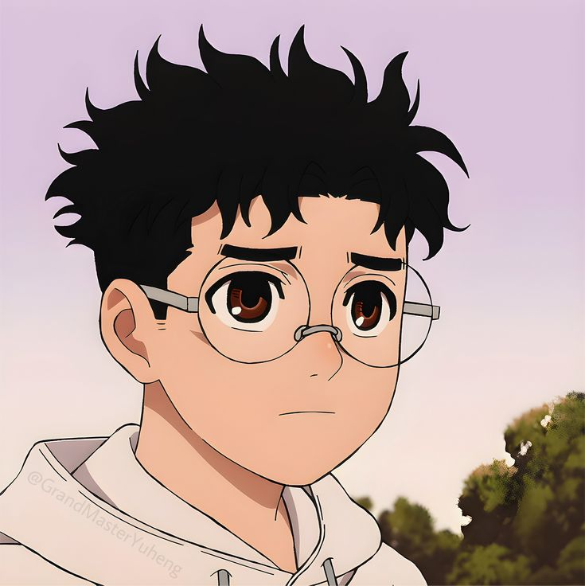
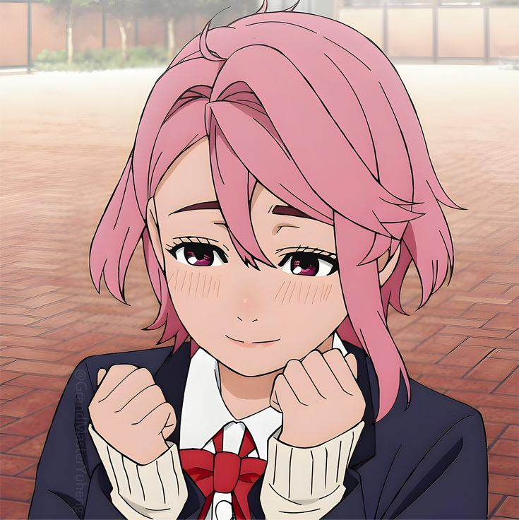
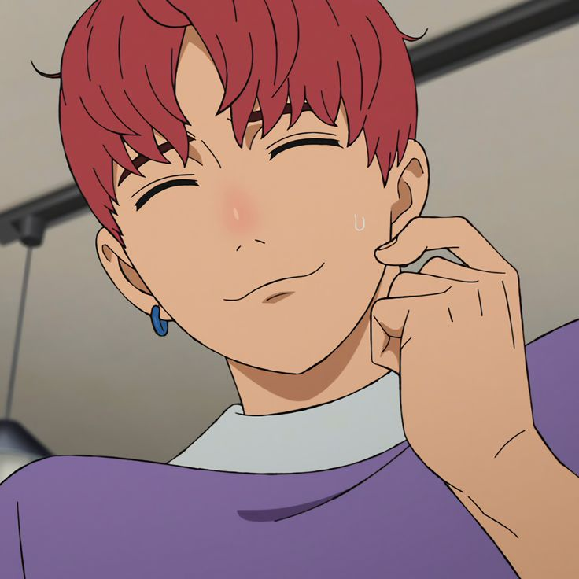
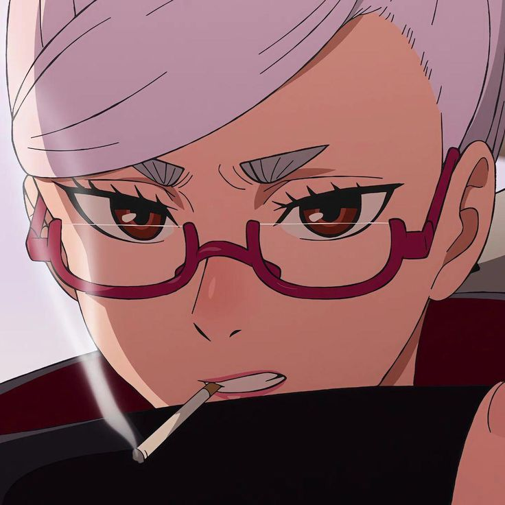

Quando o sobrenatural e o extraterrestre colidem, nasce uma história única!
EXPLORAR
SOBRE
SOBRE O ANIME
Dan Da Dan acompanha Momo Ayase, uma estudante que acredita em fantasmas, e Okarun, um colega obcecado por alienígenas. Para provar um ao outro o que é real, eles visitam locais paranormais e ETs, acabando abduzidos e possuídos. Juntos, enfrentam forças sobrenaturais caóticas enquanto desenvolvem poderes e buscam recuperar parte do corpo de Okarun
PERSONAGENS

MOMO AYASE
Uma garota determinada que acredita em fantasmas e espíritos

OKARUN
Um garoto que acredita em alienigenas e adora ocultismo.

AIRA SHIRATORI
Uma garota popular que ganha poderes espirituais e passa a enfrentar espíritos.

JIJI
Amigo de infância de Momo que acaba envolvido com fenômenos sobrenaturais.

SEIKO AYASE
Avó de Momo e uma poderosa médium que lida com espíritos